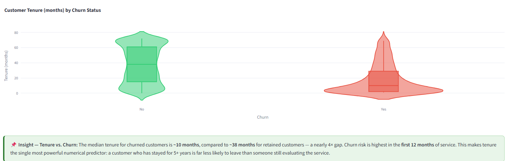
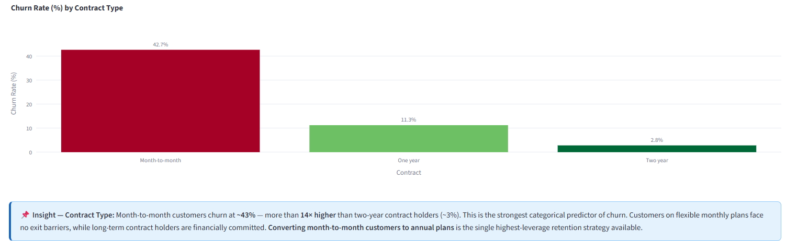
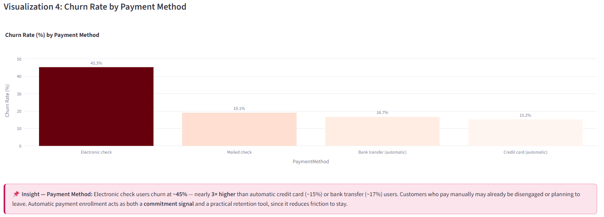
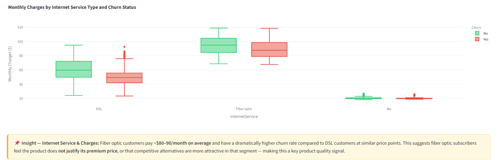
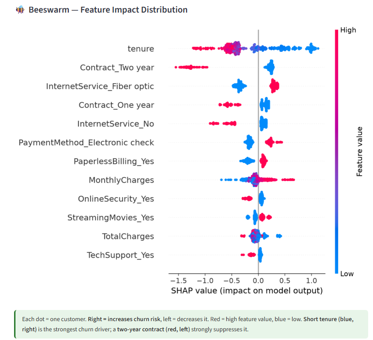

1 Objective
Identify high-leverage churn drivers across 7,043 subscribers by analyzing behavioral, demographic, and account data, and deliver an interactive, explainable retention decision tool (using SHAP). This enables marketing and retention teams to proactively prevent subscriber loss, optimize customer lifetime value (CLV), and protect subscription revenue where acquiring a new customer costs 5–10× more than retention.
2 Actions Taken & Methodology
- Data Processing & Imbalance Handling: Addressed a moderate class imbalance (73.5% retained / 26.5% churned) by using F1 Score and AUC-ROC as primary metrics. Applied
class_weight='balanced'for tree/logistic models andscale_pos_weightfor XGBoost during a 70/30 stratified train/test split. - Modeling & Tuning: Evaluated 5 models (Logistic Regression, Decision Tree, Random Forest, XGBoost, and MLP). All models were tuned via 5-fold cross-validation with GridSearchCV. Random Forest yielded the highest F1 score (0.6387).
- Explainability & Deployment: Integrated SHAP (SHapley Additive exPlanations) to decompose predictions into individual feature contributions, allowing business users to see the magnitude and direction of churn drivers via a Streamlit web app.

Visualization 1: Tenure Distribution
Shows median tenure gap (~10mo churned vs ~38mo retained)
Shows median tenure gap (~10mo churned vs ~38mo retained)

Visualization 2: Churn by Contract Type
Month-to-month (~43%) vs Two-year (~3%)
Month-to-month (~43%) vs Two-year (~3%)

Visualization 3: Churn by Payment Method
Electronic check (~45%) vs Auto-pay (~15-17%)
Electronic check (~45%) vs Auto-pay (~15-17%)

Visualization 4: Charges by Internet Service
Fiber optic 3x higher churn rate than DSL
Fiber optic 3x higher churn rate than DSL

SHAP Explainability: Beeswarm & Bar Charts
Illustrates short tenure and contract type as massive prediction drivers
Illustrates short tenure and contract type as massive prediction drivers
3 Deeper Insights & Business Outcomes
- Tenure is the #1 Predictor: Median tenure for churned customers is just ~10 months (vs. 38 for retained). SHAP analysis confirms that the first 12 months represent the highest risk, requiring aggressive early-lifecycle engagement.
- Contract Lock-in Strategy: Month-to-month customers churn at ~43%, compared to a mere ~3% for 2-year contracts. Converting flexible-plan customers to annual commitments is the highest-leverage retention lever.
- Payment Friction & Engagement: Electronic check users churn at nearly double the rate of automatic payment users (~45% vs ~15%). Automatic payment enrollment serves as a critical commitment signal and practical retention tool.
- Product Value Gap: Despite paying premium prices ($80-90/mo), Fiber Optic subscribers churn at 3× the rate of DSL users, indicating the product may not justify its cost or faces heavy competition.
- Demographic Protection: Senior citizens without a partner churn at ~53%. Having a partner provides strong stickiness (dropping churn to ~17%), suggesting family/household bundle promotions are highly effective for retention.